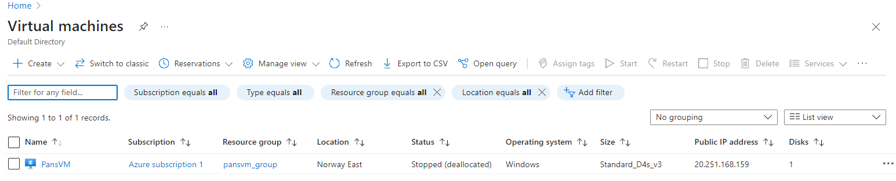
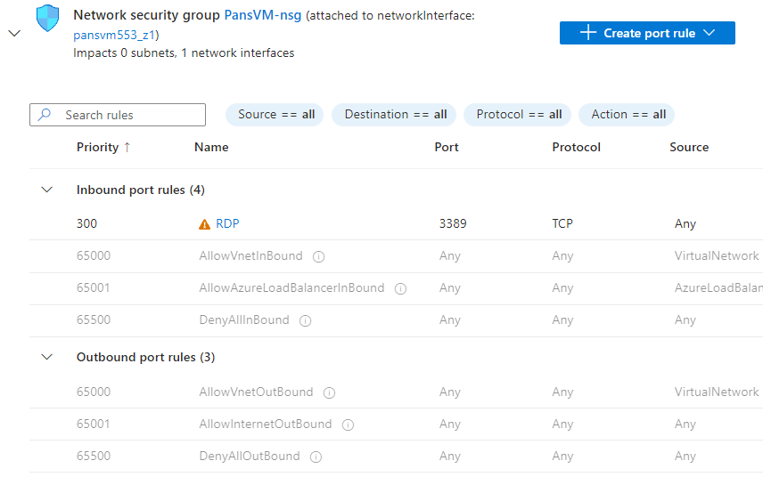
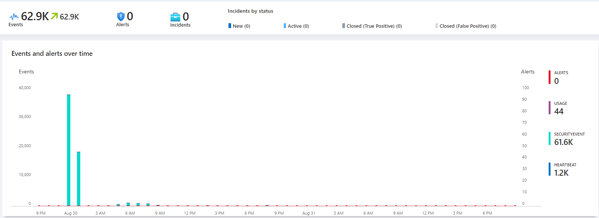

Setting Up a Security Information and Event Management (SIEM) System Using Microsoft Sentinel
In this project, I’ll be setting up a Security Information and Event Management (SIEM) system that can monitor and generate alerts for endpoints, simulating a real-world environment. The best part is that I’ll be doing this for free using Azure trial credits.
Why I’m Building This Project
With over 95% of Fortune 500 companies utilizing Microsoft Azure, gaining a solid understanding of Azure services, specifically Microsoft Sentinel, is crucial for anyone looking to enhance their cybersecurity skills. This lab provides me with real-time security insights and the ability to detect security events, making it a valuable learning tool. As someone who is relatively new to Azure, I'm eager to explore what Sentinel has to offer. This aligns with my focus on strengthening my Blue Team skills, particularly in protecting endpoints and networks.
Getting Started: Setting Up Azure and Creating a Virtual Machine
As a first-time user of Azure, I signed up and received $200 in free credits. This amount is sufficient to set up and experiment within this lab environment.
- Create a Resource Group: A resource group in Azure acts as a container that holds related resources for a specific Azure solution. I started by creating a new resource group to organize the resources for this project.
- Set Up a Virtual Machine (VM): Using the Azure portal, I created a new VM. I opted for a Windows Server VM with the default configuration.
- Enable Remote Desktop Protocol (RDP): I allowed RDP access to the VM. Since RDP is a common target for attackers, it’s an excellent way to generate security events for monitoring.


Deploying Microsoft Sentinel
- Create a Sentinel Instance: I searched for “Sentinel” in the Azure portal and set up a new instance. Sentinel is a cloud-native SIEM solution that offers comprehensive security analytics and threat intelligence.
- Create and Link a Log Analytics Workspace: I created a Log Analytics workspace and linked it with the VM. This workspace will collect and store logs from the VM, which will then be analyzed by Sentinel.
Configuring Data Collection and Monitoring
- Install Data Connectors: Data connectors are essential for Sentinel to gather information from various sources. I installed the Azure Monitor Agent (AMA), which acts as a bridge to collect logs from the VM.
- Set Up Data Collection Rules: I defined specific rules for collecting security-related data from the VM. For this lab, I focused on collecting all security events, such as successful and failed logins and changes to security policies.
- Create Alert Rules: Using Sentinel's built-in capabilities, I created alert rules that trigger based on specific events. For example, I set up a rule that generates an alert whenever a successful RDP login occurs from a non-system account. This rule is configured to run every five minutes to ensure timely detection of any suspicious activities.
Monitoring and Analyzing Incidents
- Incident Management: Once the alert rules were active, Sentinel automatically generated incidents based on the criteria I set. These incidents can be investigated to assess the nature and severity of the potential threats.
- Customize the Sentinel Dashboard: The Sentinel dashboard provides a centralized view of incidents, data, and analytics. I customized it by adding widgets and tiles, giving me quick access to crucial information such as the number of incidents, types of alerts, and data flow.

Conclusion
Setting up this lab with Microsoft Sentinel in Azure has given me practical experience with cloud-based SIEM systems. This project not only helps me better understand Azure’s capabilities but also enhances my ability to detect and respond to security incidents effectively. The skills gained from this lab are directly applicable to real-world cybersecurity roles, making it a valuable addition to my professional toolkit.
With this foundational setup complete, I look forward to exploring more advanced features in Azure Sentinel, such as automating threat responses and integrating custom threat intelligence feeds.
Connor Panso